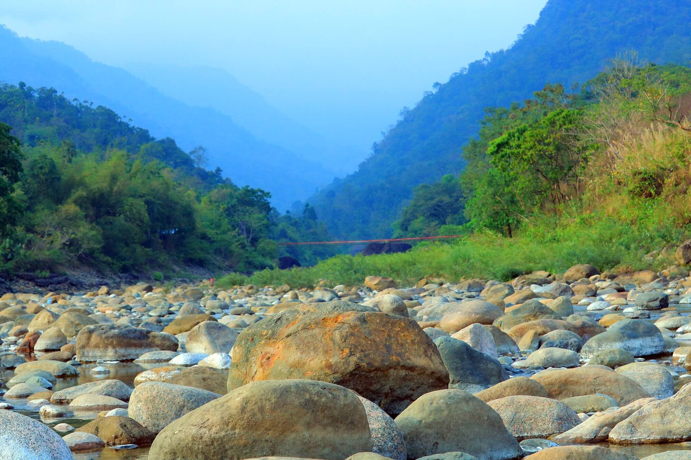

Sylhet

Explore the Beauty of Sylhet
Sylhet, located in northeastern Bangladesh, is renowned for its tea gardens, picturesque landscapes, and vibrant culture. It is a region of natural beauty and serenity, attracting visitors from around the world. Key attractions include:
- Jaflong - A scenic spot known for stone collection and the Dawki River
- Ratargul Swamp Forest - A unique freshwater swamp forest
- Lawachara National Park - A rainforest teeming with wildlife
- Sreemangal - Famous for tea gardens and the 'Seven Color Tea'